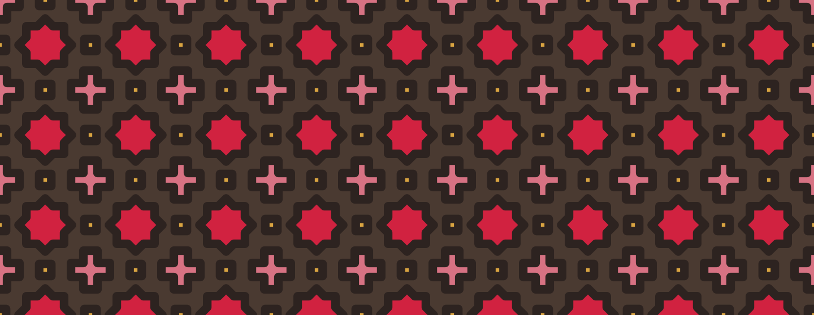

Ekranda gördüyünüz rəqəm
Qiymətə ƏDV və səhər yeməyi daxildir. Şəhər vergisi, xidmət haqqı, “təmizlik haqqı” kimi əlavələr yoxdur. Qapıda ödəyəcəyiniz məbləğ təqvimdəki məbləğdir.
Şəki · Yuxarı Baş
Xan Sarayından 900 metr aralıda, 1920-ci illərin evində. Hansı gecənin nə qədər olduğunu öyrənmək üçün heç kimə yazmağa ehtiyac yoxdur — bütün il təqvimdə görünür.

Bizim qayda
Azərbaycanda otel saytlarının çoxunda qiymət yazılmır: “əlaqə saxlayın” deyilir. Qonaq yazmır — gedib başqa yerdən baxır və otel həmin qonağa görə komissiya ödəyir. Biz bunu etmirik və səbəbini gizlətmirik.
Qiymətə ƏDV və səhər yeməyi daxildir. Şəhər vergisi, xidmət haqqı, “təmizlik haqqı” kimi əlavələr yoxdur. Qapıda ödəyəcəyiniz məbləğ təqvimdəki məbləğdir.
Qiymət ilin altı mövsümündə dəyişir. Hər mövsümün nə vaxt başladığı və niyə bahalaşdığı qiymət səhifəsində açıq yazılıb.
Hər otağın kvadratmetri, qapısına neçə pillə olduğu, çarpayısının santimetri və miqyaslı planı səhifəsindədir. Gəlmədən bilmək lazım olan şeylər.
Otaqlar
Otaqlar evin pəncərələrindəki şüşə rənglərinin adını daşıyır. Kartdakı rəng həmin otağın rəngidir — təqvimdə, planda və səhifəsində eyni rəngi görəcəksiniz.
Tək nəfərlik otaq
Evin ən kiçik otağı, tək gələnlər üçün. Pəncərəsi həyətdəki tut ağacına baxır.
90 ₼ən ucuz gecə · 150 ₼-dək
Baxİki nəfərlik otaq
Zirzəmi mərtəbəsində deyil, həyət səviyyəsində — qapıya üç pillə var.
120 ₼ən ucuz gecə · 200 ₼-dək
Baxİki çarpayılı otaq
İki ayrı çarpayı. Dost və ya iş yoldaşı ilə gələnlərin seçdiyi otaq.
130 ₼ən ucuz gecə · 215 ₼-dək
BaxŞüşəbəndli iki nəfərlik
Otağın həyətə baxan tərəfi şüşəbənddir — çay içmək üçün ayrıca oturacaq.
155 ₼ən ucuz gecə · 255 ₼-dək
BaxÇardaq otağı
Ən yuxarı mərtəbə, mailli tavan. Qərbə baxır, günbatımı pəncərədən görünür.
125 ₼ən ucuz gecə · 205 ₼-dək
BaxBalkonlu iki nəfərlik
Evin ən böyük ikinəfərlik otağı. Yeganə vannalı otaq və 180 sm çarpayı.
170 ₼ən ucuz gecə · 280 ₼-dək
BaxAilə otağı
Dörd nəfər üçün. Uşaq çarpayıları alçaq arakəsmə ilə ayrılıb.
210 ₼ən ucuz gecə · 345 ₼-dək
BaxKiçik lyuks
İki pəncərəli künc otağı, ayrıca oturma hissəsi ilə. Evin ən böyük otağı.
245 ₼ən ucuz gecə · 405 ₼-dək
BaxRestoran
Səhər yeməyi otaq qiymətinə daxildir və həyətdə verilir. Axşam yeməyi menyusu kiçikdir: beş əsas yemək, üçü Şəki mətbəxindən.

Şəki bələdçisi
Şəhəri satmaq üçün deyil — hansı saatda getmək, nəyə baxmaq və nəyi almamaq lazım olduğunu yazdıq.
Mismarsız, yapışqansız, 5000-dən çox taxta və şüşə parçası. Sarayı görməzdən əvvəl nəyə baxacağınızı bilmək işə yarayır.
6 dəqiqəlik oxu
OxuŞəhərdə onlarla emalatxana var və hamısı eyni halvanı bişirmir. Fərqi nədə axtarmaq lazımdır.
5 dəqiqəlik oxu
OxuQafqazın ən qədim kilsə binalarından biri. Ən maraqlı hissəsi divarlar deyil, döşəmədəki çuxurlardır.
5 dəqiqəlik oxu
OxuQonaq rəyləri
Saytda yazılan qiymət nə isə, qapıda ödədiyimiz də o oldu. Əlavə heç nə çıxmadı. Bunun nə qədər nadir olduğunu bilirsinizmi.
Otağın küçəyə baxdığını və səhər səs olacağını əvvəlcədən yazmışdılar. Səs oldu, amma xəbərim vardı deyə problem olmadı.
Mənzərə əladır, amma 34 pillə zarafat deyil. Saytda yazılıb, oxumamışam — öz günahım.
Rezervasiya forması gecə sayını və məbləği özü hesablayır, sonra WhatsApp və ya e-poçt üçün hazır mesaj mətni verir. Ödəniş yerində, nağd və ya kartla.